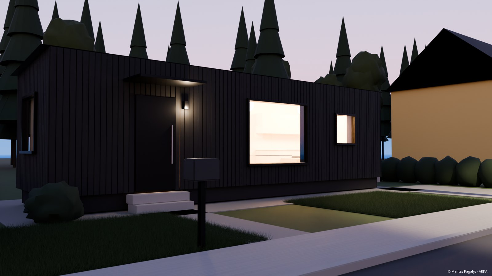
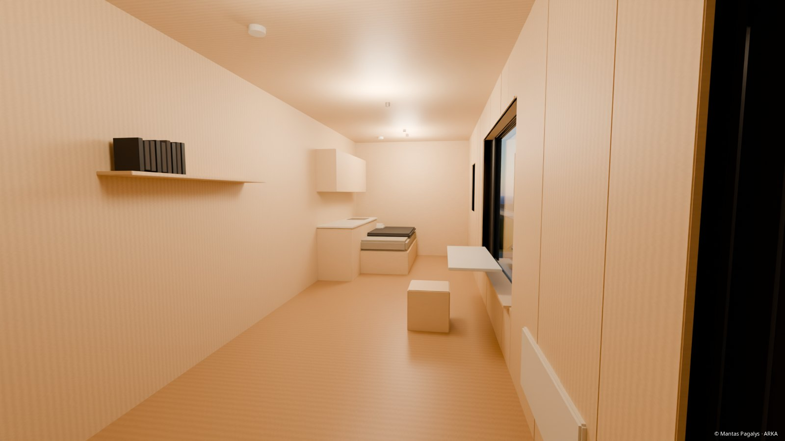
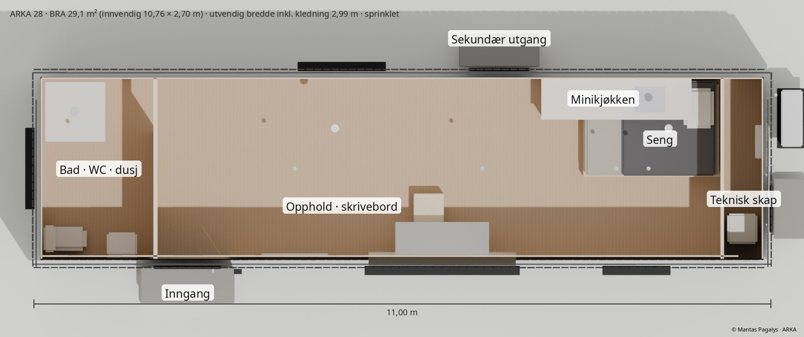
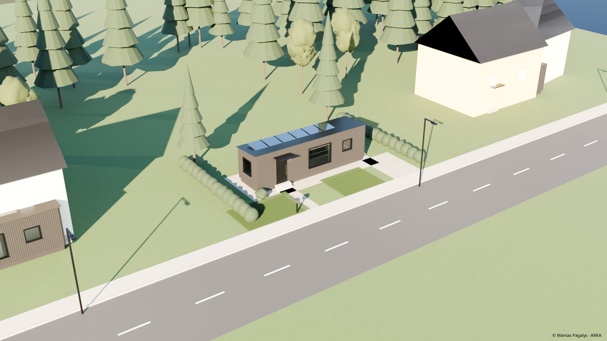

ARKA · Fra midlertidig til fast · oktober 2026
En fast bolig koster kommunen mindre per måned enn én natt på hotell
Norske kommuner betaler hotell- og pensjonatpriser for å gi tak over hodet til personer de har lovpålagt plikt til å hjelpe. En liten fabrikkbygd bolig på en kommunal tomt, finansiert av Husbanken og leid ut til en husleie innenfor grensen for bostøtte, koster kommunen høyst omtrent 1 300 kr i måneden etter husleie, også når alle forsiktige forutsetninger er lagt til grunn.
Hvorfor ARKA: arka betyr bue, konstruksjonen som spenner over et gap og bærer lasten. ARKA bygger buen fra midlertidig botilbud til fast bolig, av deler som allerede finnes.
Slik leser du tallene: kilde hentet fra en navngitt offentlig kilde · beregnet regnestykke på tall med kilde · antakelse en forutsetning som piloten skal bekrefte. Alle tall kan etterprøves med den publiserte modellen (arka_finance.py); siste del lister kildene og hvor grundig hver av dem er kontrollert.
© 2026 Mantas Pagalys, opphavsperson for ARKA-modellen (første versjon datert 28.09.2026). Kommuner og andre offentlige organer kan bruke metoden i egne anskaffelser med kildehenvisning. Kommersiell gjenbruk, videresalg eller gjengivelse fra leverandører, konsulenter eller investorer krever skriftlig tillatelse. Kontakt: pagalysm@gmail.com
Problemet
Den midlertidige løsningen har blitt den dyre
Ved utgangen av 2025 sto 9 396 kommunale boliger uten leietaker, mens 14 458 søknader om kommunal bolig ble avslått (SSB tabell 12008 og 12012). Det mangler ikke boliger som sådan, men riktig bolig på riktig sted. Tromsø har sagt offentlig at lange opphold i midlertidig botilbud gjør at kommunen bryter loven. Pengene brukes allerede; spørsmålet er hva de gir igjen.
Sammenligningen
Kroner per måned, per husstand. Til venstre: det Tromsø i gjennomsnitt betalte for midlertidig botilbud i 2025. Til høyre: det meste en fast ARKA-bolig koster kommunen etter husleie, med vanlig tomt, uten mva.-kompensasjon og uten gavebidrag. beregnet
Kommunens netto månedlige kostnad per husstand som får bolig
Bolig: lån fra Husbanken til 4,774 % (20 år fast rente, oktober 2026) over 50 år, driftskostnader 1 640 kr/mnd. (vedlikehold, kommunale avgifter, forsikring), husleie 7 050 kr ved 95 % utleiegrad, uten mva.-kompensasjon. Midlertidig botilbud: Stavangers øvre døgnsats × 365 / 12; Tromsøs netto utgift i 2025 ÷ omtrent 70 husstander.
Prisen
Kjøp boligen, ikke entreprenøren
Samme omfang i hver søyle: én liten fast bolig, inkludert grunnarbeid og tilknytninger. Besparelsen kommer av måten boligen kjøpes på, ikke av at det bygges mindre.
Investeringskostnad per bolig, millioner kroner ekskl. mva.
Anbud på hardbruksbolig: Ringsaker 2024, én hardbruksbolig, komplett leveranse inkl. klargjøring av tomt, vann og strøm. Totalentreprise: anslag oppgitt av kommuner i egne kunngjøringer, 55–85 000 kr/m² × 30 m². ARKA-veien: modul ≈28 000 kr/m² × 30 m², grunnarbeid 275 000 kr på vanlig tomt eller 100 000 kr på opparbeidet tomt, pluss 40 000 kr i bikostnader.
Slik fungerer det
Fem deler som allerede finnes. Modellen kobler dem bare sammen.
For en kommune som ikke ønsker å låne: en stiftelse eller investor eier boligene med lån fra Husbanken på 85 %, under en tilvisningsavtale som gir kommunen rett til å tildele leietakere. Den løsningen krever mer enn 15 % egenkapital for å kunne finansieres. Se «Ett hus, tre finansieringsmodeller».
Referanseenheten
ARKA 28: tegnet etter reglene som gjør den rask å få på plass og mulig å finansiere




| Krav | Regel | ARKA 28, målt på modellen |
|---|---|---|
| Enklere søknadsvei, SAK10 § 3-1 e (uten ansvarlig foretak bare på tomt som allerede er bebygd) | ≤30 m² BRA, én etasje, ≤4,5 m høy, uten pipe | 29,1 m² · 1 etasje · 3,44 m · uten pipe |
| Romhøyde, TEK17 § 12-7 | ≥2,4 m i rom for varig opphold | 2,66 m fri høyde |
| Transport uten følgebil | ≤3,0 m bred | 2,99 m |
| Bostøtte | Egen inngang, bad og WC, mulighet for matlaging, plass til å sove og oppholde seg | Alt er på plass |
| Oppvarming | Ingen pipe ved den enklere søknadsveien | Luft-til-luft-varmepumpe og panelovner |
| Sikkerhet, fra seks kommunale konkurransegrunnlag | Sprinkler med alarm, sekundær rømningsvei, tilgang for personell til tekniske installasjoner | Boligsprinkler og røykvarslere, bakdør, teknisk skap som åpnes utenfra, med nøkkelboks |
| Hardbruk | Overflater som kan rengjøres og skiftes ut | Gulv med fall til sluk, ingen dusjvegger i glass, kryssfiner skrudd synlig over OSB |
Designillustrasjoner av referanseenheten ARKA 28, gjengitt fra opphavspersonens parametriske modell, der hvert mål over er kontrollert med skript mot regelen ved siden av. Bildene er ikke fotografier av et bygd hus. Endelige mål følger dokumentasjonen fra valgt leverandør og kommunens krav. En bolig større enn 30 m² er et eget produkt som krever ansvarlig foretak og uavhengig kontroll.
Kommunebudsjettet
Den egentlige prøven er nettokostnaden, og alle tilfellene ligger langt under midlertidig botilbud
Kommunens netto månedlige kostnad etter husleie, uten mva.-kompensasjon
Lån til 4,774 % over 50 år med månedlige terminer; driftskostnader 1 640 kr/mnd.; husleie 7 050 kr ved 95 % utleiegrad; 40 000 kr i bikostnader per bolig. En opparbeidet tomt med et gavebidrag på 200 000 kr gir et overskudd på omtrent 535 kr i måneden.
Husleien alene dekker ikke lånet i alle tilfeller, og modellen later ikke som om den gjør det. Med mva.-kompensasjon, som bare er mulig for spesielt tilrettelagte boliger, blir hvert tilfelle omtrent 1 100–1 300 kr bedre i måneden. Over 20 år lønner boligen seg for enhver kommune der midlertidig botilbud koster mer enn omtrent 9 600–11 000 kr per husstand per måned (317–363 kr per døgn). Tromsøs gjennomsnitt i 2025 var omtrent 16 200.
Hvor gavemidler passer inn
De samme 10 mill. kr: 8 boliger kjøpt, eller 37 boliger som går i pluss
Husbanken og husleien betaler for huset. Gavemidler gjør det ingen av dem gjør: et bidrag på omtrent 270 000 kr per bolig løfter en bolig på opparbeidet tomt fra et lite underskudd til et overskudd med den dekningsgraden en långiver krever (1,2×), også uten mva.-kompensasjon.
Boliger levert per 10 mill. kr i gavemidler
Samme grunnlag for begge søylene: opparbeidet tomt, uten mva.-kompensasjon. Kjøpt direkte: 1,225 mill. kr per bolig inkl. mva., altså 8 hele boliger. Katalysator: 270 000 kr per bolig med kommunalt lån fra Husbanken.
Hvem den er for
Ett hus, tre finansieringsmodeller
Boligen er den samme for alle. Det som endres, er hvem som eier den og hvordan den betales. Rekkefølgen under starter der tallene er sterkest og kjøperen er tydeligst.
| Modell | Hvem som bor der | Hvem som eier, og hvordan det betales | Når |
|---|---|---|---|
| 1 · Kommunal bolig | Personer kommunen skaffer bolig til: enslige voksne med lav inntekt, flyktninger, personer med funksjonsnedsettelse, unge voksne som flytter ut fra barnevernet, personer i bedring etter utfordringer med rus og psykisk helse | Kommunen, med lån fra Husbanken på inntil 100 %, husleie innenfor grensen for bostøtte | Pilot |
| 2 · Blandet utleie | Minst 40 % tildelt av kommunen; resten leies ut på det åpne markedet til studenter, enslige arbeidstakere og personer som velger å bo lite | En stiftelse eller investor med lån fra Husbanken på 85 %, med tilvisningsavtale i minst 20 år. Krever mer enn 15 % egenkapital | Neste trinn |
| 3 · ARKA 40+ | Unge førstegangskjøpere i distriktskommuner | Kommunen kjøper og selger videre; en lokal bank gir lån (Heim-modellen). Over 30 m², og derfor et eget produkt med alle ansvarsroller i byggesaken | Etter de første leveransene |
Blandede leieforhold styrker modellen: en bolig i en vanlig gate, blant vanlige naboer, er nettopp det Housing First tar sikte på.
Hvorfor ingen stopper det
Alle parter med vetorett kommer bedre ut
| Part | I dag | Med ARKA | Resultat |
|---|---|---|---|
| Kommunen | Utgifter til midlertidig botilbud og en lovpålagt plikt den har vanskelig for å oppfylle | En fast bolig til en brøkdel av den månedlige kostnaden | Bedre stilt |
| Husbanken | 93 % av utlånsvolumet til utleieboliger i 2025 gikk til private selskaper | Låner ut til den sikreste låntakeren, innenfor kjerneoppdraget | Bedre stilt |
| Boligleverandører | 3–5 konkurranser i året der boligen kjøpes separat | Flere slike konkurranser, spredt gjennom en åpen metode | Bedre stilt |
| Innkjøper | Personlig ansvar hvis en ny metode slår feil | En mal, et statlig eksempel å vise til (DFØ Eksempelbanken) og en koordinator | Bedre stilt |
| Giver | 1 bolig per ≈1,2 mill. kr | 1 bolig som går i pluss per ≈270 000 kr | Bedre stilt |
| Hoteller, totalentreprenører | Får betalt | Mister noe omsetning | Dårligere stilt · ingen vetorett |
Innvendinger
Det en kredittkomité vil spørre om, med svar
| Innvending | Svar | Gjenstående risiko |
|---|---|---|
| Husleien dekker ikke lånet i alle tilfeller | Det stemmer, og modellen sier det. Kommunens nettokostnad i verste fall er omtrent 1 300 kr i måneden per bolig, mot omtrent 16 200 for midlertidig botilbud i Tromsø. Et gavebidrag på omtrent 270 000 kr gjør at en bolig på opparbeidet tomt går i pluss. | Lav |
| Ingen mva.-kompensasjon | Allerede lagt til grunn. Kompensasjon gis bare for spesielt tilrettelagte boliger (Skattedirektoratet 2013); domstolene er delt, og begge dommene er anket. Kompensasjon ville forbedre hvert tilfelle med omtrent 1 100–1 300 kr i måneden. | Innregnet |
| Renten stiger | Bind renten i inntil 20 år til 4,774 % (oktober 2026). Hvert prosentpoeng gir omtrent 700–900 kr mer i måneden per bolig, fortsatt en brøkdel av kostnaden ved midlertidig botilbud. | Lav |
| En bolig i distriktet kan bli verdsatt lavere enn det den kostet | Kommunen er låntaker. Lån til kommuner gis uten pant, og kommuner kan ikke gå konkurs. | Lav |
| Hard slitasje | Hardbruksspesifikasjon fra seks kommunale konkurranser: gulv som kan vaskes, med sluk, utskiftbare plater, sprinkler. Driftskostnadene er budsjettert ut fra komponentene, ikke anslått på skjønn. | Middels |
| Modulprisen blir høyere enn antatt | Den viktigste enkeltfaktoren. En bolig på opparbeidet tomt når 1,2× husleiedekning uten gavebidrag ved en modulpris på omtrent 20 800 kr/m², mot omtrent 28 000 i dag. Pilotkonkurransen fastslår den reelle prisen. | Middels |
| Leverandøren går konkurs midt i leveransen | Flere små leverandører i dette markedet har svak kapitalbase. Konkurransegrunnlaget krever kontraktsgaranti og betaling i etapper mot levert arbeid, og ARKA er aldri avhengig av én enkelt leverandør. | Middels |
| Hvorfor modul og ikke tradisjonell bygging? | Tid. Hver måned en husstand venter i midlertidig botilbud, koster omtrent 16 200 kr (gjennomsnitt Tromsø 2025). En ferdig bolig plassert på en tomt der vann, avløp og strøm allerede er på plass, forkorter ventetiden; piloten måler hvor mye. | Lav |
| Kvalitet og oppfyllelse av TEK17 | Bare leverandører med SINTEF Teknisk godkjenning eller ETA; en norsk ingeniør gjennomgår dokumentasjonen før noen bestilling. | Middels |
Spørsmål og svar
Direkte svar
Hvem er det for?
Personer kommunen skaffer bolig til: enslige voksne med lav inntekt, flyktninger, personer med funksjonsnedsettelse, unge voksne som flytter ut fra barnevernet, personer i bedring etter utfordringer med rus og psykisk helse. Under modell 2 også studenter, enslige arbeidstakere og personer som velger å bo lite. ARKA 28 er for én voksen; par, rullestolbrukere og foreldre som har barn på samvær, trenger en større bolig.
Hvorfor ikke bare bruke de tomme kommunale boligene?
Der de passer, bør de brukes først. Men 9 396 kommunale boliger sto uten leietaker ved utgangen av 2025, mens 14 458 søknader ble avslått. Det viser at den eksisterende boligmassen ofte har feil størrelse, ligger feil sted eller ikke er robust nok. ARKA 28 er den typen boligmassen mangler: en enkeltstående, robust bolig, spredt plassert, med sprinkler, sekundær rømningsvei og tilgang for personell.
Er dette en hytte eller et mikrohus?
Nei. Det er en fast bolig, godkjent og registrert for helårsbruk, aldri som mobil bolig. Bostøtte gis ikke for mobile boliger.
Hvorfor under 30 m²?
En frittliggende bolig på inntil 30 m² BRA i én etasje faller inn under en enklere søknadsvei (SAK10 § 3-1 e). På en tomt som allerede er bebygd, trengs det ikke ansvarlig foretak. På en ubebygd tomt krever DiBKs veiledning ansvarlig foretak; leverandøren eller en lokal byggmester tar den rollen.
Hvorfor én bolig per tomt?
To nye boliger på samme tomt vurderes samlet og mister den enklere søknadsveien. Å spre enkeltboliger i vanlige gater er dessuten det Housing First-praksis anbefaler.
Hvorfor ingen vedovn?
Pipe eller røykkanal fjerner den enklere søknadsveien. Varmen kommer fra luft-til-luft-varmepumpe og elektriske panelovner.
Kvalifiserer boligen for bostøtte?
Ja: den har egen inngang, eget bad og WC, mulighet for matlaging og plass til å sove og oppholde seg. Om leietakeren får bostøtte, avhenger av inntekten. Bostøtten regner med husleie inntil 7 050 kr i måneden for én person når oppvarming betales separat, eller 7 686 kr når den er inkludert.
Hvem eier boligene?
Normalt kommunen. Alternativt en stiftelse eller investor, med en tilvisningsavtale som gir kommunen tildelingsrett i minst 20 år.
Hvordan finansieres det?
Lån fra Husbanken på inntil 100 % til kommunen, over inntil 50 år, med mulighet for fast rente i inntil 20 år (4,774 % i oktober 2026). Husleien dekker det meste av kostnaden; kommunens netto andel er høyst omtrent 1 300 kr i måneden per bolig. Bostøtten dekker høyst 4 032 kr av husleien (73,7 % av boutgiftene over en minste egenandel på 26 576 kr i året). Lever leietakeren av sosialhjelp, betaler kommunen også de resterende ≈3 000 kr, og hele kommunens kostnad blir høyst omtrent 4 300 kr: fortsatt rundt en firedel av midlertidig botilbud, som også betales over sosialhjelpen.
Hva med mva.?
Modellen legger til grunn full mva. på 25 % uten kompensasjon. Kompensasjon er bare mulig for boliger som er spesielt tilrettelagt for helsemessige eller sosiale formål; sikkerhetsløsningene i ARKA styrker et slikt krav, men ingenting avhenger av det.
Hva må kommunen stille med?
En opparbeidet tomt, tildeling av leietakere og oppfølgingstjenester, som kommunen allerede gir. Koordinering av piloten kan kjøpes som direkteanskaffelse (under 500 000 kr kreves ingen konkurranse fra 1. juli 2026), og kan senere delfinansieres gjennom Husbankens tilskudd til boligtiltak (neste frist 15. mai 2027).
Hvem bygger det?
En etablert fabrikk valgt gjennom åpen konkurranse, med norsk dokumentasjon (SINTEF Teknisk godkjenning eller ETA). ARKA produserer ikke og selger ikke boliger, og gir aldri tilbud i en konkurranse ARKA har vært med på å utforme.
Hvordan tjener ARKA penger?
Som koordinator for kommunen: gjennomfører konkurransen, organiserer grunnarbeidet og kontrollerer dokumentasjonen. Selve metoden er åpen for offentlige organer.
Er det bygd noen ARKA-bolig?
Ikke ennå. Piloten skal gi reelle tall for kostnad, vedlikehold og unngått midlertidig botilbud, i kommunens eget regnskap. Lignende boliger leveres allerede til norske kommuner av andre, for eksempel i Sandnes og Heim.
Hvem står bak?
Mantas Pagalys, tømrer bosatt i Oslo, som har utviklet modellen og den økonomiske analysen. Kontakt: pagalysm@gmail.com
Forslaget
En pilot: 5 boliger, én kommune, ett år
- Én kommune med tomter der vann, avløp og strøm er på plass, helst allerede bebygd, og med press på midlertidig botilbud. Sterke kandidater: Bodø, Skjervøy, Namsskogan, Meløy, Steinkjer, Nesseby
- Omtrent 1,35 mill. kr fra givere: 5 × 270 000 kr per bolig
- Koordinering kjøpt av kommunen som direkteanskaffelse (under terskelen på 500 000 kr), med Husbankens tilskudd til boligtiltak som senere medfinansiering
- En norsk ingeniør til teknisk gjennomgang
- Den reelle modulprisen fra en åpen konkurranse: den viktigste faktoren i modellen
- Reelle driftskostnader med reelle leietakere
- Unngått midlertidig botilbud, i kommunens eget regnskap
- Et publisert eksempel i DFØs Eksempelbanken, slik at neste kommune kan starte med dokumentasjon
Tre forhold bekreftes før noen bestilling: Husbankens syn på enkeltboliger på spredte tomter; reelle driftskostnader fra en kommune som allerede eier små boliger; pilotkommunens egen månedlige kostnad til midlertidig botilbud.
Kilder og sikkerhet
Hva som har kilde, hva som er beregnet, hva som er antatt
| Tall | Status | Kilde |
|---|---|---|
| Husbanken: inntil 100 % (kommune) / 85 % (juridisk person) av verdien; 50 år; 20 år fast rente; tilvisning ≥40 % i ≥20 år | kilde | Forskrift om lån fra Husbanken § 7-4 og kap. 3 (Lovdata); Husbankens veileder HB.7.B.18 |
| Husbanken 20 år fast rente 4,774 %, flytende 4,025 % (oktober 2026) | kilde | husbanken.no, renteutvikling |
| Øvre grense for boutgifter i bostøtten 92 234 kr i året, én person; tillegg for oppvarming 7 631 kr i året | kilde | Forskrift om bustøtte §§ 2–3 (Lovdata) |
| Bostøttens krav til boligen | kilde | husbanken.no, krav til boligen |
| Mva.-kompensasjon bare for spesielt tilrettelagte boliger | kilde | Skattedirektoratet, uttalelse 12.03.2013; Gulating 26.03.2026 og Oslo tingrett 16.05.2026, begge anket |
| Tromsø 2025 netto utgift 13,6 mill. kr, omtrent 70 husstander; hotell 4 000–4 500 kr per døgn | kilde | Nettavisen / Nordlys, 16.02.2026 |
| Stavanger inntil 2 000 kr per døgn; over 40 mill. kr i fjor | kilde | Stavanger Aftenblad, 04.09.2026 |
| Kommunale gebyrer for vann, avløp og avfall 17 302 kr i året (standardbolig) | kilde | SSB tabell 12842, 2026 |
| 9 396 kommunale boliger uten leietaker per 31.12.2025; 14 458 søknader avslått (2025) | kilde | SSB tabell 12008 og 12012 (API, lest 03.10.2026) |
| 7 077 husstander i midlertidig botilbud i 2024 (+60 %) | kilde | KOSTRA, via ARKA-forskningsfil B |
| Ringsaker hardbruksbolig 3,5 mill. kr ekskl. mva. (2024) | kilde | Doffin 2024-103263, via fil B |
| Modul ≈28 000 kr/m² ekskl. mva. | kilde | Listepris fra Fleksihus, via fil A |
| Direkteanskaffelse tillatt under 500 000 kr ekskl. mva. (fra 01.07.2026) | kilde | Anskaffelsesforskriften § 1-1, endret ved FOR-2026-04-14-617 (Lovdata) |
| Tilskudd til boligtiltak: frist 15. mai; organisasjonsnummer kreves; resultater publiseres åpent | kilde | FOR-2026-03-26-506 § 8 (Lovdata) |
| Opparbeidede kommunale tomter: Skjervøy, Namsskogan, Meløy, Steinkjer, Nesseby og flere | kilde | Kommunenes nettsider og gebyrregulativer; NRK (forskningsfil D) |
| Kommuner kan ikke gå konkurs; lån til kommuner gis uten pant | kilde | kbn.com; kommuneloven |
| Grunnarbeid 100 000–275 000 kr; bikostnader 40 000 kr; forsikring; utleiegrad 95 %; andelen av gebyrene en bolig på 30 m² betaler | antakelse | Bekreftes i piloten |
Modell: arka_finance.py, med en stresstest på 50 000 trekninger av rente, priser, driftskostnader, utleiegrad og mva. Ikke juridisk rådgivning eller skatterådgivning.
© 2026 Mantas Pagalys, opphavsperson for ARKA-modellen (første versjon datert 28.09.2026). Kommuner og andre offentlige organer kan bruke metoden i egne anskaffelser med kildehenvisning. Kommersiell gjenbruk, videresalg eller gjengivelse fra leverandører, konsulenter eller investorer krever skriftlig tillatelse. Kontakt: pagalysm@gmail.com
Opphavsdokumentasjon: SHA-256-manifest av ARKA-kildefilene, dfa304180430744d…, tidsstemplet 03.10.2026 via OpenTimestamps.